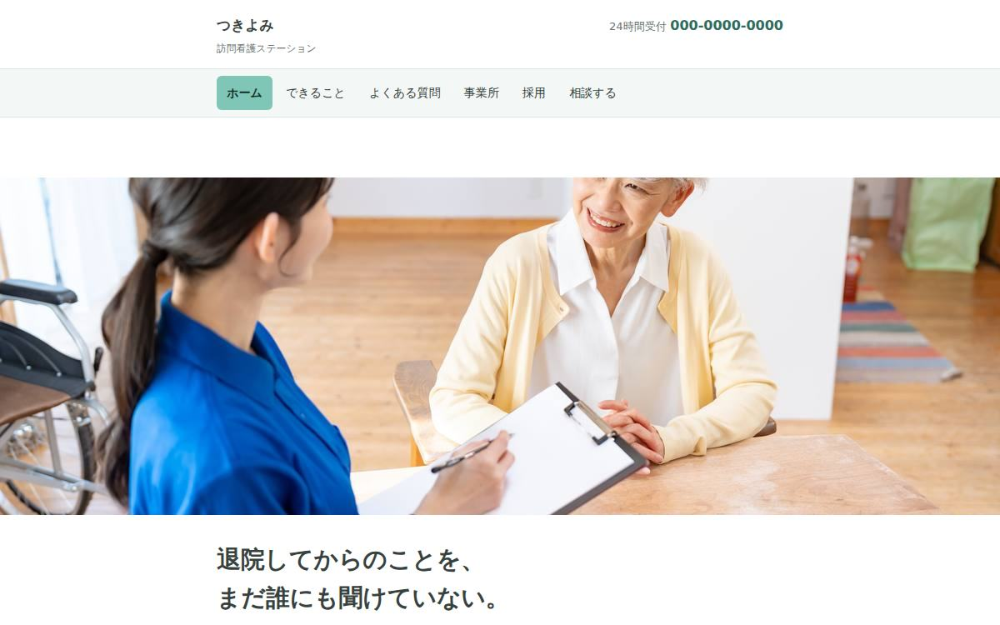
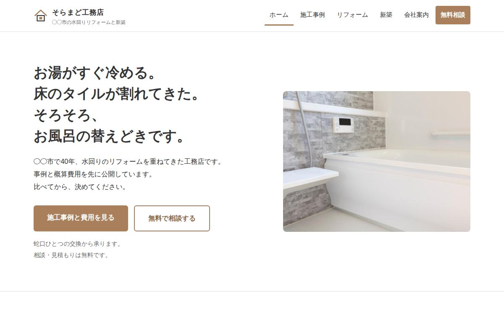
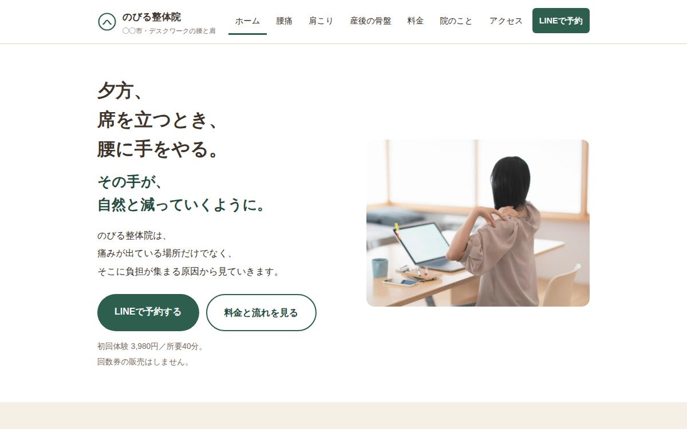
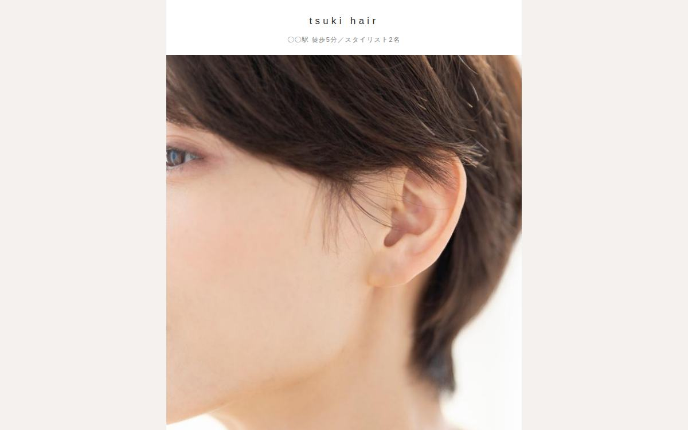
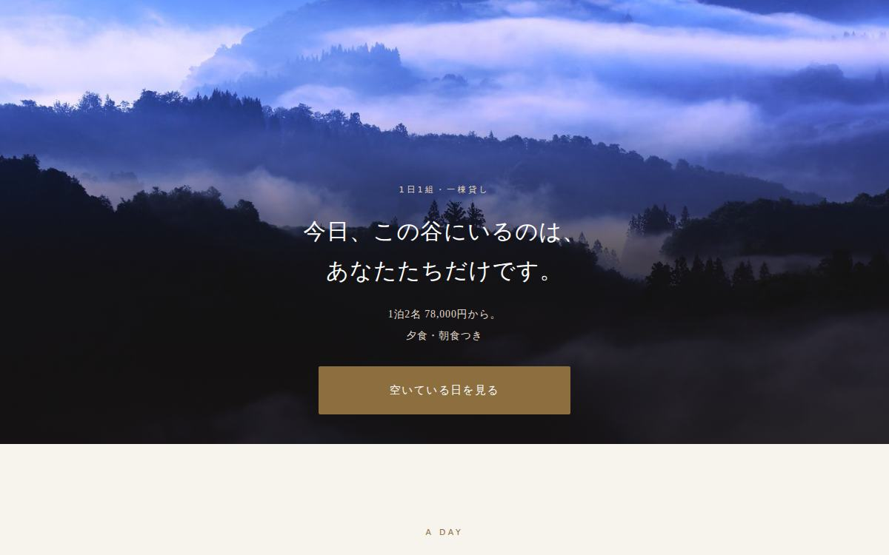
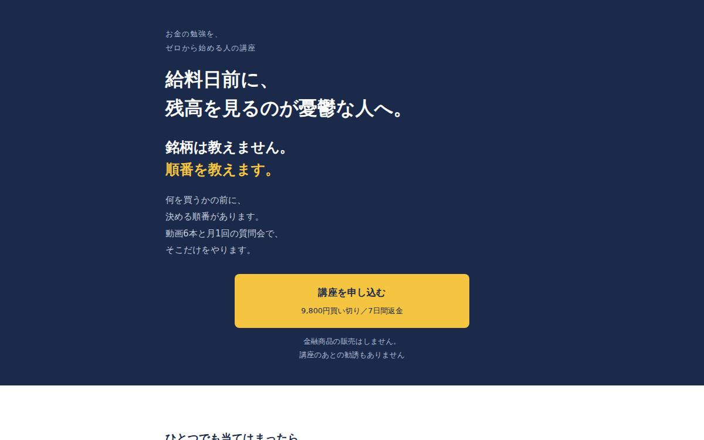

自主
自主看護×AI活用室（集客LP）
現役看護師向けの
PORTFOLIO — WRITER / VIDEO EDITOR
医療・金融分野の
文字単価 2円/初稿まで 3日/月 10本 まで
内容・
12年間、一人 ひとりの 患者さんの 個別性に 合わせて 仕事を してきました。
「伝えたいこと」と「受け取る人」の両方を 考える ——
書くことも、 編集する ことも、 看護の 仕事と 同じ 姿勢で できる 仕事だと 思っています。 ヨアケ｜看護師12年目・FP3級
WRITING
医療とお金は、
下の
専門知識の
音声入力での
資格を
経歴と
最新の
VIDEO
テンポを
動画の
情報まとめ系・解説系を
視聴者が
患者さん
分かりやすさが
Photoshopでの
クリックされる
WEB
記事だけでなく、
自主現役看護師向けの

自主訪問看護の

自主水回りリフォームの

自主整体院の

自主美容室の

自主1日1組の

自主オンライン講座の
 自主
自主いまご覧いただいている
SERVICES
医療・金融の
ひとりに
現場を
文章と
ビジネス系・解説系が
制作者さんの
MidjourneyとにじJourneyで
HOW I WORK
外注で
「納期」と「連絡が取れるか」だと
そこを
スケジュールから
発注者さんが
量産は
内容を
ESTIMATE — ご依頼の
記事の
| 稼働時間 | 平日 2〜4時間程度 |
|---|---|
| 連絡可能時間 | 平日 8:30〜23:00 ／ 休日 10:00〜23:00 |
| 執筆の | Word／Google ドキュメント／Markdown |
| 使用ソフト | Adobe Premiere Pro／Adobe Photoshop |
ABOUT
リサーチの
ただし、
「AIに書かせただけの原稿は困る」と
CONTACT
ご質問や
下の